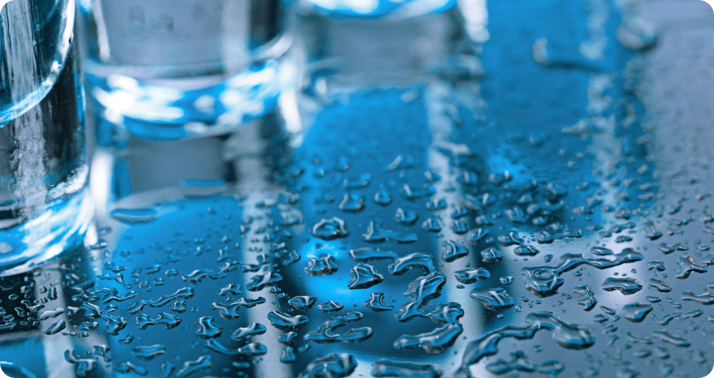
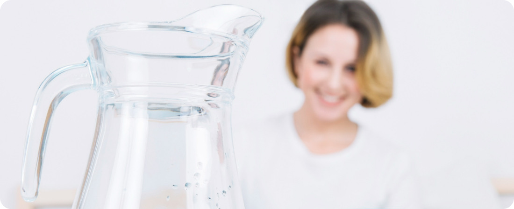

Understanding Water Softeners: Benefits for Your Home and Health
Water softeners are becoming increasingly popular among homeowners seeking to improve the quality of their water and enhance their overall well-being. These systems work by removing minerals such as calcium and magnesium from hard water, resulting in water that is gentler on skin, hair, and household appliances. In this article, we'll delve into the benefits of water softeners for your home and health.
1. Softened Water for Cleaner and Brighter Fabrics
Hard water contains minerals that can leave behind residues on clothing and linens, making them appear dull and stiff after washing. Water softeners effectively remove these minerals, allowing laundry detergents to lather more effectively and rinse away cleanly. As a result, clothes and fabrics washed in softened water tend to be cleaner, softer, and brighter, prolonging their lifespan and improving overall laundry results.
2. Protection for Household Appliances
Hard water can wreak havoc on household appliances such as washing machines, dishwashers, and water heaters. The minerals in hard water can accumulate inside these appliances, leading to scale buildup, reduced efficiency, and premature failure. By installing a water softener, you can protect your appliances from damage and extend their lifespan, saving you money on costly repairs or replacements.
3. Reduced Soap Scum and Mineral Deposits
One of the most noticeable benefits of water softeners is the reduction in soap scum and mineral deposits on surfaces such as sinks, faucets, and shower doors. Softened water lathers more easily with soaps and detergents, resulting in less residue left behind after cleaning. This not only makes cleaning tasks easier and more effective but also helps maintain the appearance and longevity of fixtures and surfaces in your home.
4. Healthier Skin and Hair
Hard water can strip the skin and hair of natural oils, leaving them dry, itchy, and prone to irritation. By softening the water, you can enjoy gentler showers and baths that are less harsh on your skin and hair. Softened water helps to preserve the skin's natural moisture barrier, leading to softer, smoother skin and healthier-looking hair.
5. Improved Efficiency of Plumbing Systems
Over time, mineral buildup from hard water can accumulate inside pipes and plumbing fixtures, restricting water flow and reducing system efficiency. Water softeners prevent this buildup, keeping pipes clean and clear for optimal water flow and pressure throughout your home. This not only improves the performance of your plumbing system but also reduces the risk of clogs, leaks, and costly repairs.
In conclusion, water softeners offer a wide range of benefits for your home and health, from cleaner laundry and protected appliances to healthier skin and hair. By investing in a water softener, you can enjoy the many advantages of softened water while prolonging the lifespan of your plumbing system and household appliances. If you're considering a water softener for your home, consult with a qualified water treatment specialist to determine the best solution for your needs and budget.